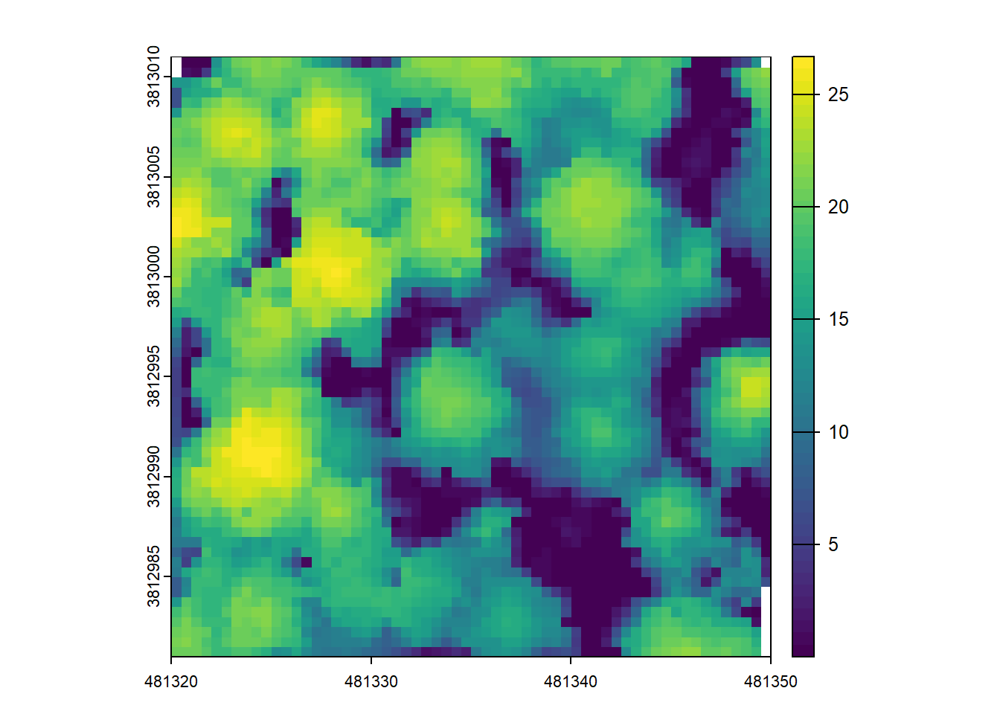

library(lidR) # Used to locate maxima
library(dplyr) # Used to manage dataframes
library(terra) # Used to extract raster values
library(glue) # Used to print progress updates
library(gifski) # Used to compile GIF
library(tictoc) # Used to print elapsed time
library(ggplot2) # Used to generate plots
library(ggforce) # Used to draw circular window
# Load the lmf_animator function in your R environmentITD Animator Tutorial
Individual Tree Detection Animator - Tutorial
This code allows the user to visualize the working operation of the local maxima finder tree detection algorithm by creating a beautiful GIF of the process.
The code works by taking an input CHM, performing local maxima tree detection with lidR locate_trees, and subsequently plotting the moving window as it proceeds through the CHM cells.
This work is based on the demonstration by ptompalski his original code can be viewed here.
For more information on local maxima tree top detection using a variable window size based on canopy height see the original Popescu and Wynne 2004 publication.
Using the animator
Load the necessary packages
Generate a Canopy Height Model (or load your own)
# Load pre-created CHM
# chm <- rast('chm_dir/your_chm.tif')
# Use built in LAS file from lidR
LASfile <- system.file("extdata", "MixedConifer.laz", package="lidR")
# Crop to small area while reading
las <- readLAS(LASfile, filter = "-inside 481320 3812981 481350 3813011")
# Generate 0.50m CHM
chm <- rasterize_canopy(las, res = 0.5, algorithm = pitfree(c(0,2,5,10,15), c(0, 1.5)))
plot(chm, col = viridis::viridis(50))
Determine your aesthetic parameters and run the animator
# Generate subset animation using Z values as background
lmf_animator(chm, # Input CHM
dir_out = "output", # Directory where GIF and frames are saved
gif_out_name = "example_z.gif", # Output file name of GIF
buffer = 2.5, # Buffer around plot
delay = 0.1, # Time (ms) between frames in GIF
circular = T, # Circular or square lmf window
subset = TRUE, # Subset frames of the CHM (otherwise takes a long time)
sub_range = 1:800, # Range of CHM cells to subset
col_pal = scale_fill_viridis_c(), # Colour pallette for plotting CHM/hillshade
clear_frames = F, # Delete frames after GIF is created?
skip_cells = 3, # Skip cells to speed up processing and GIF playback (1 = do not skip)
ttop_size = 3, # plot.sf option size
ttop_shape = 3, # plot.sf option shape
ttop_col = "red", # plot.sf option for colour
hillshade = F # plot hillshade instead of Z values?
)Resulting GIF

# Generate subset animation using hillshade as background
lmf_animator(chm, # Input CHM
dir_out = "output", # Directory where GIF and frames are saved
gif_out_name = "example_hs.gif", # Output file name of GIF
buffer = 2.5, # Buffer around plot
delay = 0.1, # Time (ms) between frames in GIF
circular = T, # Circular or square lmf window
subset = TRUE, # Subset frames of the CHM (otherwise takes a long time)
sub_range = 1:800, # Range of CHM cells to subset
col_pal = scale_fill_viridis_c(), # Colour pallette for plotting CHM/hillshade
clear_frames = F, # Delete frames after GIF is created?
skip_cells = 3, # Skip cells to speed up processing and GIF playback (1 = do not skip)
ttop_size = 3, # plot.sf option size
ttop_shape = 3, # plot.sf option shape
ttop_col = "red", # plot.sf option for colour
hillshade = T # plot hillshade instead of Z values?
)Resulting GIF